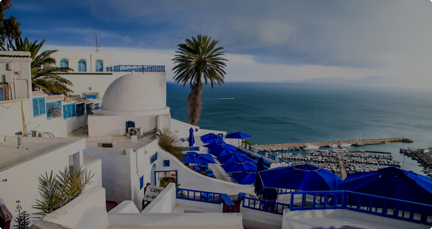
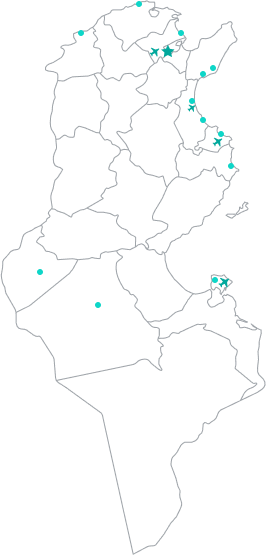
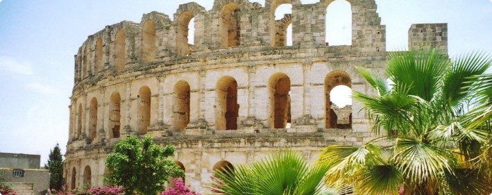
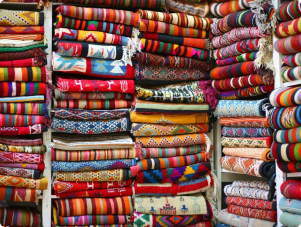
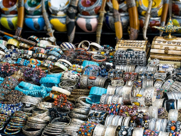
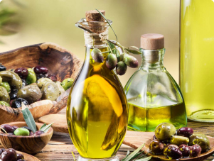
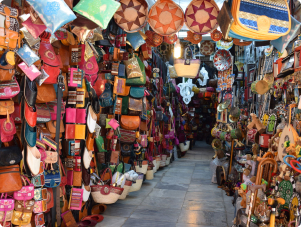

Тунис – это страна с огромным ассортиментом туристических возможностей в любое время года. Мы умеем организовать идеальный отпуск в высокий сезон, когда все стремятся в Тунис ради комфортной, не изнуряющей жары, чистого Средиземного моря и песочных пляжей. не изнуряющей жары, чистого Средиземного
И знаем, что предложить в межсезонье, чтобы путешествие оказалось источником позитивных эмоций и ярких воспоминаний, а туристы непременно захотели бы сюда вернуться. Тем более, что повод вернуться обязательно найдется: Тунису всегда есть что предложить своим друзьям. не изнуряющей жары, чистого Средиземного


В Тунисе существует 10 курортов. Все они обладают одновременно схожестью между собой и каждый – своим уникальным обликом. Одни места больше подходят для любителей тусовок и ночной жизни, другие для тихого пляжного отдыха, а третьи используются в качестве отправной точки для экскурсий по любопытным достопримечательностям.
Написать небольшой текст о том, на каких курортах есть наши отели, какие-то отличия, схожесть. Какие-то больше для молодежи, другие для более взрослого поколения,а третьи используются в качестве отправной точки для экскурсий по любопытным достопримечательностям.
Небольшой курорт и один из старейших городов Туниса, основанный финикийцами задолго до нашей эры.
Это место с удивительной историей, в которой есть страницы, рассказывающие о судьбах пиратов, французских колонизаторов и русских семей, которые прибыли сюда в 1920 году на кораблях Императорского флота. Здесь есть на что посмотреть – арабская медина и старый порт, защитный форт времен Османской империи и даже самый настоящий русский православный храм.
В Бизерте очень удобный пляж – с пологим спуском в воду, без резких перепадов глубины. Это отличное место для отдыха с детьми. Песок белый и шелковистый, море чистое и прозрачное, просто рай для отдыхающих.
В десяти километрах от города находится самая северная точка Африки, мыс Бланк. А в двадцати километрах от Бизерты расположено уникальное озеро Ичкеуль с пресной и соленой водой.
Курорт, который расположен в пригороде столицы, отсюда крайне удобно выезжать с экскурсиями к знаменитым тунисским достопримечательностям. До столицы отсюда можно добраться не только на автобусе или такси, но и на метро, поезда которого курсируют по маршруту Тунис-Гаммарт.
Легендарный Карфаген, прославившийся в веках, и Сиди-Бу-Саид, бело-голубой город художников, музыкантов и поэтов. Музей Бардо с богатейшей коллекцией артефактов изобразительного искусства и медина Туниса, старый арабский город, внесенный в список Всемирного наследия человечества ЮНЕСКО. Все это находится в пределах досягаемости, буквально в десяти-тридцати минутах пути от Гаммарта.
Здесь есть роскошный яхтенный порт и большое поле для игры в гольф, собственный пляж и даже лес. Это престижное место для отдыха, в Гаммарте множество фешенебельных отелей и резиденций.
Столица одноименного государства, политический, экономический и культурный центр Туниса. Это город контрастов, здесь древняя история тесно переплетена с современностью, африканские мотивы с европейскими, – и путешественнику сложно понять, в какой эпохе и на каком континенте он находится.
Центральная достопримечательность Туниса – это, конечно же, медина, объект, внесенный в список Всемирного наследия человечества ЮНЕСКО. Старый арабский город, похожий на сказку из «Тысячи и одной ночи», – со своими дворцами и рынками. Здесь находятся мечеть Зитуана, главная в городе, и красивейшая мечеть Хамуда Паши. На рынках можно купить ароматические масла и кальянный табак, национальную одежду и ткани. На бывшем невольничьем рынке торгуют золотыми и серебряными украшениями.
«Апельсиновая столица» Туниса, которая также по праву считается столицей керамики. Жители Набеля занимаются выращиванием цитрусовых – и это не только апельсины, но еще и лимоны, и померанцы, своеобразный гибрид помело и мандарина. И, конечно, огромную славу своему городу принесли ремесленники, мастера по изготовлению шедевральной керамической посуды и сувениров.
Недалеко от Набеля расположен центр тунисского виноделия Громбалия – и во время экскурсии в местную винодельню можно попробовать различные сорта красного, белого, розового и даже серого вина, образцы которого получают награды на престижных международных конкурсах. Также отсюда легко добраться до Хаммамета с его знаменитыми достопримечательностями и развлекательными центрами.
В Набеле качественные и очень удобные песчаные пляжи – с пологим заходом в море, идеальным для отдыха с детьми.
Один из самых крупных курортов Туниса – и место, в которое приезжали отдыхать уже во времена Римской империи. Здесь можно пройтись по узким улочкам медины, старинного арабского города, и посетить фестиваль искусств на Вилле Себастьяна, где выступают исполнители классической и современной музыки, мастера танца и виртуозы сцены из разных уголков мира.
В Хаммамете множество центров талассотерапии, сюда приезжают буквально «за здоровьем». Но и развлечения в этом городе на высоте: туристический район Ясмин-Хаммамет с парками Картаж Лэнд, Аквалэнд, Али-Баба и Аладдин, клубы, дискотеки и рестораны. И, конечно, радость для глаз, роскошный яхтенный порт, из которого можно отправиться на морскую прогулку под пиратским флагом на яхте, галеоне или шхуне.
А еще тут великолепные пляжи, чистое море – и очень мало медуз, купание в Хаммамете – отдельное удовольствие.
Город на северо-востоке Туниса – и одноименный международный аэропорт, один из самых крупных в Африке. Основной пассажиропоток – чартеры, которые доставляют сюда туристов из разных стран, но есть в расписании и местные авиарейсы, для путешественников, желающих посетить остров Джерба.
Однако Энфида – это не только аэропорт, местные пляжи славятся шелковым песком, а море тут чистое и прозрачное, просто созданное для купания. Атмосферу Энфиды создает неповторимое сочетание самобытной африканской культуры с колоритом бывшей французской колонии и яркой современностью, здесь есть на что посмотреть и где погулять.
Об истории города можно узнать во время экскурсии в местный музей античной истории. Также любителям отдыха, насыщенного интересными впечатлениями, наверняка понравится посещение аутентичных берберских деревушек, расположенных недалеко от Энфиды.
Третий по величине город Туниса и один из ведущих курортов страны. Местные талассоцентры привлекают туристов из разных стран мира, курсы лечебных процедур с использованием экологически чистого сырья дарят здоровье и молодость.
В Сусе удобные песчаные пляжи с пологим заходом в море, без резких перепадов глубины, – это место создано для любителей комфортного отдыха на побережье. Хотя и ценители истории получат от путешествия сюда массу ярких впечатлений: медина Суса внесена в список Всемирного наследия человечества ЮНЕСКО, это хорошо сохранившийся старый арабский город с романтическими узкими улочками, окруженный мощной крепостной стеной, – и далеко не единственная здешняя достопримечательность.
В Сусе можно играть в гольф и заниматься дайвингом, посещать клубы и рестораны или заглянуть в один из самых больших и впечатляющих 3D-музеев мира – удовольствия здесь буквально на любой вкус.
Родина первого президента и борца за независимость Туниса Хабиба Бургибы – и место, которое наверняка придется по душе любителям героической романтики. Арабская крепость Рибат, защитники которой проводили свои дни в сражениях и после смерти мечтали найти последнее пристанище у мощных крепостных стен, чтобы обеспечить себе место в раю, – экскурсия сюда вряд ли оставит кого-то равнодушным.
Мавзолей Хабиба Бургибы, старая мечеть, медина с шумными рынками, на которых можно купить специи и пряности, благовония и тунисские сладости – и это далеко не весь список мест, которые стоит посетить, приехав в Монастир.
Но это еще и первоклассный пляжный отдых – особенно если речь идет о туристическом районе Сканес. Бананы, гидроциклы, водные лыжи, парасейлинг – и дискотеки под африканскими звездами, каждый найдет здесь что-то свое.
Небольшой и очень симпатичный тунисский курорт со сказочными пляжами. Это место для расслабленной релаксации: вкусная еда, прогулки по берегу моря, процедуры талассотерапии – и, конечно, пляжный дзен, вот список основных местных удовольствий.
Хотя есть в Махдие, и без того прекрасной, и дополнительные изюминки. Например, гигантские Черные ворота, напоминающие о крепостной стене, которая некогда опоясывала город. Или цитадель Бордж Эль-Кебир, откуда открывается завораживающий вид на окрестности. А еще – интереснейший археологический музей, в коллекции которого есть без преувеличения уникальные артефакты.
А если гости Махдии все же захотят окунуться в насыщенную яркими развлечениями тусовочную жизнь, сделать это будет совсем несложно. Отсюда ходит электричка в Сус, это еще один великолепный курорт Туниса – и место, где найдутся удовольствия практически на любой вкус.
Остров, расположенный в заливе Габес, у средиземноморского побережья Туниса. Это настоящий рай для рыбаков, любителей пляжного отдыха – и ценителей кайтбординга, для этого вида спорта на Джербе просто потрясающие условия.
Здесь можно пройти курсы талассотерапии, это идеальное место для восстановительного отдыха. При проведении процедур применяются натуральные массажные масла, целебные грязи, водоросли – и, конечно, морская вода. Экологическая чистота используемого сырья и мастерство местных специалистов, занимающихся талассотерапией, гарантируют эффективность такого лечения.
Хотя путешествие сюда – радость не только для тела, но и для души. Остров может похвастаться интересными достопримечательностями: подземными мечетями, старейшей еврейской синагогой, гончарными мастерскими, в которых производят настоящие шедевры, пиратской крепостью и много чем еще.
Этот город называют столицей оазисов – и расположен он в очень необычном месте. Рядом с Тозером находится солончак Шотт-эль-Джерид, озеро с соленой водой, которое выглядит просто фантастически: именно здесь проходили съемки некоторых эпизодов саги Джорджа Лукаса «Звездные войны».
Красота этого места буквально завораживает, пересохшие участки Шотт-эль-Джерид, покрытые соляной коркой, переливаются на солнце – и особенно яркое зрелище можно наблюдать на рассвете, во время восхода.
Но в Тозере есть чем полюбоваться и кроме солончака. Здесь очень самобытная архитектура, дома сделаны из кирпичей, выступающих друг над другом, – и знаменитые местные ковры повторяют орнамент этой кладки. Город окружен пальмовыми рощами, которые орошаются водой из множества источников. Некоторые из этих источников – целебные.
Место пересечения древних караванных путей – и «ворота» в пустыню. Именно здесь проходит Международный фестиваль Сахары, красочное действо, во время которого устраивается знаменитая гонка на верблюдах, в которой принимают участие наездники из разных стран.
На фестиваль приезжает множество гостей, которых угощают блюдами национальной кухни и радуют необычными представлениями. Показательные выступления с охотничьими собаками, огненная джигитовка на конях и верблюдах, инсценировка свадьбы кочевников, соревнования поэтов – здесь можно увидеть много интересного.
В Дузе стоит посетить музей Сахары, экспозиция которого рассказывает о жизни берберов: установке шатров, клеймении верблюдов, изготовлении ковров. Но главная достопримечательность тут – сама пустыня, необъятная и величественная. Из Дуза отправляются экскурсии в Сахару на автобусах, джипах, квадроциклах – и, конечно, на верблюдах.


Даже в туризме правят бренды. Тысячи путешественников мечтают увидеть Эйфелеву башню, Колизей или египетские пирамиды, и на фоне известных достопримечательностей часто теряются не менее достойные постройки.
Эль-Джем
Кажется, такова и участь амфитеатра в Эль-Джеме — одной из самых больших и лучше всего сохранившихся построек эпохи расцвета Римской Империи. Для Туниса он стал визитной карточкой и сегодня, как и более 1500 лет назад, величественной громадой возвышается над маленьким городком среди пустыни. Это самый большой амфитеатр вне Европы из более чем 250 римских амфитеатров.
Эль-Джем
Кажется, такова и участь амфитеатра в Эль-Джеме — одной из самых больших и лучше всего сохранившихся построек эпохи расцвета Римской Империи. Для Туниса он стал визитной карточкой и сегодня, как и более 1500 лет назад, величественной громадой возвышается над маленьким городком среди пустыни. Это самый большой амфитеатр вне Европы из более чем 250 римских амфитеатров.
Эль-Джем
Кажется, такова и участь амфитеатра в Эль-Джеме — одной из самых больших и лучше всего сохранившихся построек эпохи расцвета Римской Империи. Для Туниса он стал визитной карточкой и сегодня, как и более 1500 лет назад, величественной громадой возвышается над маленьким городком среди пустыни. Это самый большой амфитеатр вне Европы из более чем 250 римских амфитеатров.

Тунис – это страна с огромным ассортиментом туристических возможностей в любое время года. Мы умеем организовать идеальный отпуск в высокий сезон, когда все стремятся в Тунис ради комфортной, не изнуряющей жары, чистого Средиземного моря и песочных пляжей. не изнуряющей жары, чистого Средиземного моря и песочных пляжей.
И знаем, что предложить в межсезонье, чтобы путешествие оказалось источником позитивных эмоций и ярких воспоминаний, а туристы непременно захотели бы сюда вернуться. Тем более, что повод вернуться обязательно найдется: Тунису всегда есть что предложить своим друзьям. не изнуряющей жары, чистого Средиземного моря.
Шоппинг в Тунисе – это колоритные сувениры, недорогая одежда, уникальная косметика, необычные украшения, виртуозные арабские сладости. Это шум восточных базаров, приятная прохлада сувенирных лавок и море удовольствия за чашечкой чая. Расскажем, что привезти из отпуска в Тунисе в 2021 году. Хаммамет, Сусс, Монастир, Джерба, Карфаген, Сиди-Бу-Саид – во всех регионах и на курортах страны есть свои тонкости и хитрости хороших покупок. Поделимся личным опытом и отзывами бывалых туристов, сориентируем по ценам.
Во время отдыха в Тунисе стоит хотя бы раз отправиться на шоппинг по мединам – местным восточным базарам. Они есть на каждом курорте. Отельные гиды в Хаммамете, Монастире, Суссе, на Джербе часто предлагают туристам шоп-туры и завозят не только в «прикормленные» магазины, но и на рынки. Есть смысл согласиться ради бесплатного трансфера из отеля и обратно. Самую колоритную, ароматную и душевную медину мы посетили во время экскурсии в Сиди-Бу-Саид – рекомендуем!




Ювелирные украшения на рынках Туниса покупайте с осторожностью – есть подделки. Отправляйтесь на шоппинг в специализированные лавки. Они могут «прятаться» и на базарах. Например, в Хаммамете на медине Старого города неподалеку от входа стоит несколько «правильных» лавок. У торговцев есть сертификаты на каждое изделие. Не стесняйтесь спрашивать о таком подтверждении подлинности перед покупкой.
Из полезного в Тунисе стоит купить косметические или лечебные масла. За ними лучше отправиться в государственные магазины, специализированные лавки или аптеки. На базарах встречаются подделки. Торговцы обычно хорошо разбираются в маслах и подсказывают, какие сделаны именно в Тунисе, а что привезено из соседних стран. Они легко посоветуют, что купить для массажа, ухода за волосами или телом, для приема внутрь.
Тунис таит в себе огромные возможности для тех, кто хочет не только отдохнуть, но оздоровиться и даже омолодиться. И все благодаря климату, морю и всем дарам, которыми богат этот плодородный край. Речь, конечно же, о талассотерапии и спа.
Целебные свойства морской воды были известны еще в Древней Греции. "Море — лекарство от всех болезней", — говорил древнегреческий врач Гиппократ в 4 веке до н.э. Но только в 18 столетии начали открываться морские госпитали в странах Европы. А сегодня это одно из эффективных направлений натуропатии, имеющее поклонников по всему миру.
Несколько десятилетий — с конца 19 века до 1960-х годов — Тунис был колонией Франции. Именно французы оставили здесь, на берегах Африки, свою чудодейственную терапию — "лечение морем", в переводе с греческого.